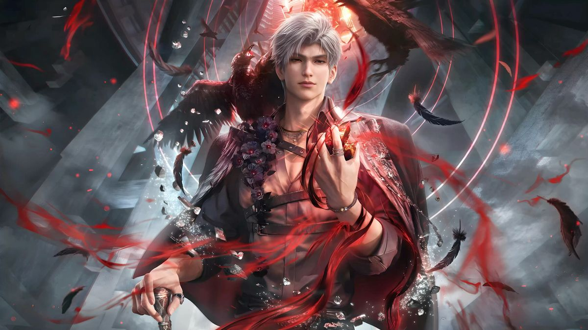
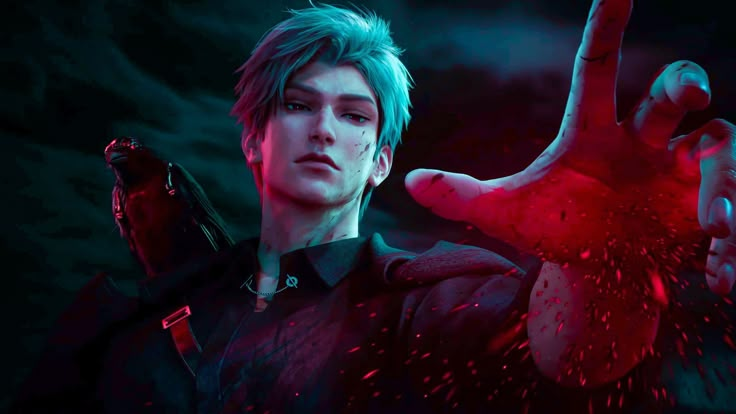
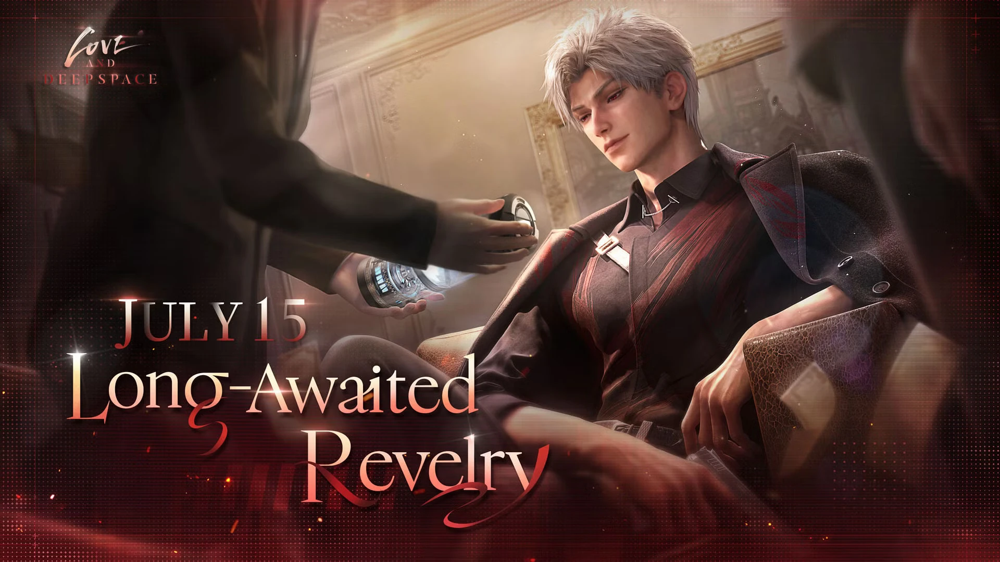

Main Story
Sylus is an ancient, immortal being known for his escapades after his species' genocide and his deep, recurring connection with the main character (MC). After his species, the Philosian Dragons, was wiped out, he became a legendary outlaw and warlord, known for overthrowing corrupt rulers and redistributing wealth, a period that includes a "Robin Hood era".
Under Deepspace
During a mission debrief, Jenna expands on Xavier's brief mention regarding Onychinus. The Player learns Sylus is the leader of Onychinus and their elusive purpose concerning modified Protocores. The Player first hears Sylus's voice while investigating the murder of an Ever Group researcher, which was linked to Onychinus. She obtained a photo of the victim and a voice clip of Sylus, followed by the victim screaming. She doesn't realize the voice belongs to Sylus at this time, but she memorizes it.
Long Awaited Revelry
The Player encountered Sylus shortly after being trafficked to the N109 Zone by an unnamed "Man In Black". When the man tried to fire a bullet at the Player, Sylus stopped the bullet mid-air using his Evol and disintegrated the man. She recognized Sylus's voice when he spoke to her. Upon looking into his glowing right eye, the Player heard a voice in her head urging her to devour him and gain the power she's always dreamed of. Sylus told her they are kindred spirits and the Player blacks out [More]
Over the span of three days in his mansion, Sylus tried and fails to force the Player to resonate with him. The Player is reluctant to cooperate with him because she believes he is responsible for the explosion that seemingly killed Caleb and her grandma. Sylus hands the Player a gun and taunts her after she claims to want to kill him. When the Player hesitates, Sylus puts a hand over hers and fires the gun into his own heart. However, his Evol easily regenerates him.
Frustrated with their lack of progress, Sylus takes the Player to Philip, the owner of the Odd Workshop in the N109 Zone who has a connection to her grandma. In the Odd Workshop, Sylus intends to make her the first living test subject in Philip's Evol Linkage Alteration project because Sylus believe that there is something wrong with the player's Evol. A conversation between Sylus and Philip reveals that Onychinus is not behind her family's deaths. Philip analyzes her Evol and explains that her Evol is suppressed because she is subconsciously rejecting him, scared of him, or disgusted by him. In order to resonate with Sylus, the Player can't be hostile towards him.
Sylus left while the player Evol is being stabilized by Philip, while Mephisto remained to monitor the player and deal with other eyes around the player that disguised as rats. Afterwards, the Player wanders around the N-109 Zone trying to gather more information about her surroundings and learn more about Onychinus and Sylus, then shifting her goal to get the Aether Core that being scheduled to be auctioned in the N109 Zone.